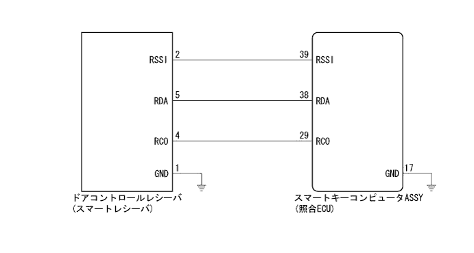
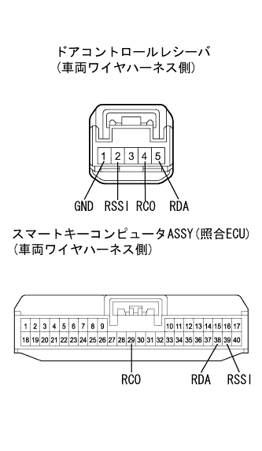
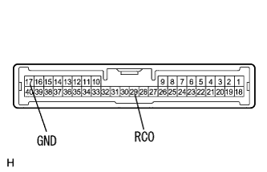

DTC B1242 Wireless Tuner System Malfunction |
| DTC No. | DTC Detection Condition | Inspection Area |
|---|---|---|
| B1242 | When the corresponding RDA signal cannot be received within 1 seconds after the PRG signal is output from the main body ECU in self-diagnosis mode |
|

| Step 1 | Inspect Wire Harness and Connector (Door Control Receiver - Certification ECU) |
 |
Disconnect the door control receiver and certification ECU connectors.
Using SST (Toyota electrical tester), measure the resistance between each terminal of the vehicle side wire harness connectors.
| Inspection terminal (receiver - certification ECU) | Condition | Standard |
|---|---|---|
| 2(RSSI) - 39(RSSI) | Always | Below 1 Ω |
| 5(RDA) - 38(RDA) | Always | Below 1 Ω |
| 4(RCO) - 29(RCO) | Always | Below 1 Ω |
| Inspection terminal (receiver - body ground) | Condition | Standard |
|---|---|---|
| 2 (RSSI) - Body ground | Always | 10k Ω or higher |
| 5 (RDA) - Body ground | Always | 10k Ω or higher |
| 4 (RCO) - Body ground | Always | 10k Ω or higher |
| 1 (GND) - Body ground | Always | Below 1 Ω |
|
| ||||
| OK | |
| Step 2 | Inspect Smart Key Computer Assembly (Certification ECU) |
 |
Disconnect the smart key computer assembly (certification ECU) connector.
Using SST (Toyota electrical tester), measure the resistance and voltage between each terminal of the vehicle side wire harness connector.
| Inspection terminal (certification ECU - body ground) | Condition | Standard |
|---|---|---|
| 17 (GND) - Body ground | Always | Below 1 Ω |
| Inspection terminal (certification ECU) | Condition | Standard |
|---|---|---|
| 29(RCO) - 17(GND) | Always | 4.5 to 5.5 V |
|
| ||||
| OK | |
| Step 3 | Replace with Known Good Door Control Receiver |
for reference.Replace the door control receiver (smart receiver) with a new or known good one.
| NEXT | |
| Step 4 | Recheck DTC |
Using SST (TaSCAN), check the DTCs again.
| Result | Proceed to |
|---|---|
| B1242 is not output | A |
| B1242 is output | B |
|
| ||||
| A | ||
| ||